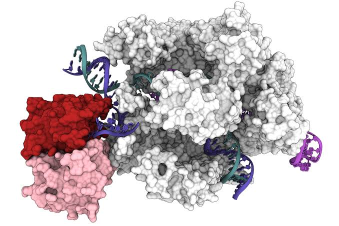

CRISPLab · Programming responsive CRISPR hybrid materials
Materials that sense, stabilize, and steer CRISPR.
CRISPLab designs stimuli-responsive and hybrid materials purpose-built around CRISPR/Cas9 — from single-particle engineering and conjugation chemistry to sensing, stabilization, and delivery across biological barriers.
Research
Everything in the lab is built around one molecular system, approached from two directions: how we engineer around it, and where it gets applied.

Cas9–sgRNA–DNA ternary complex, bound to the HNH and RuvC domains that drive target cleavage.
CRISPR / Cas9
Every line of work in the lab starts from this complex: a Cas9 protein, its guide RNA, and the DNA target it binds and cleaves. Everything below is either a way of engineering materials around this system, or a disease context where getting it to work matters.
EngineeringMaterials-level strategies for protecting, controlling, and delivering the Cas9–sgRNA complex.
Encapsulation
Polymeric nanocapsules that protect Cas9–sgRNA ribonucleoproteins and carry them across mucosal barriers, with a focus on transmucosal gene editing.
Read more +Read less –
Ribonucleoprotein complexes are fragile — activity drops off outside a narrow window of pH, ionic strength, and shear. Encapsulating a Cas9–sgRNA RNP in a polymeric nanocapsule means protecting that complex through formulation, storage, and transport across a mucosal barrier, then releasing it intact once inside the target cell.
Conjugation strategies
Site-selective bioconjugation that links polymers directly to Cas9 or sgRNA components, rather than encapsulating them as a black box — tuning stability, targeting, and release without disrupting activity.
Read more +Read less –
Encapsulation protects an RNP but treats it as a passenger. Direct, site-selective conjugation — attaching polymer chains or small functional handles to defined positions on Cas9 or the guide RNA — offers a complementary route to control circulation time, cellular targeting, and controlled release, provided the chemistry doesn't interfere with the protein's active site or the RNA's base pairing.
Single-particle engineering
Moving beyond bulk formulation to engineer and characterize CRISPR nanocarriers one particle at a time — controlling payload number, size, and surface chemistry with a precision ensemble methods can't resolve.
Read more +Read less –
Most nanoparticle formulations are reported as population averages, which hides real particle-to-particle heterogeneity in RNP loading, surface density, and release behavior. This line explores single-particle synthesis and characterization techniques to control and verify those properties directly — aiming for tighter batch-to-batch consistency and a clearer picture of which particle-level properties actually predict delivery efficiency.
CRISPR-responsive sensing
Materials that sense CRISPR activity itself — Cas9 binding, cleavage events, or the intracellular environment a payload encounters — and use that signal to trigger release or report success.
Read more +Read less –
A delivery vehicle that releases its payload on schedule is only half the picture; knowing whether editing actually happened matters just as much. This direction explores responsive elements coupled to CRISPR-relevant cues — redox state, specific enzymatic activity, target engagement — so the material itself becomes part of the readout, not just the delivery mechanism.
Small-molecule stabilization
Small-molecule additives and modifications that protect Cas9–sgRNA complexes from denaturation and loss of activity during formulation, freeze-drying, and storage.
Read more +Read less –
RNP activity drops off quickly outside a narrow formulation window. Small molecules — osmolytes, targeted excipients, or covalent stabilizing modifications — are a lighter-touch alternative to full encapsulation, and could extend shelf life and simplify cold-chain requirements for CRISPR therapeutics without the added complexity of a full delivery vehicle.
Digital twins for CRISPR delivery
Physics-informed models that predict how a CRISPR nanocarrier's design choices — size, charge, surface chemistry — translate into delivery efficiency, before a single batch is synthesized.
Read more +Read less –
Screening every combination of formulation parameters by trial and error is slow and expensive. This line builds predictive models trained on single-particle and bulk delivery data to shortcut that search, developed in parallel with Akshar Innovations, an AI-driven nanocarrier prediction venture — closing the loop between formulation design and prediction.
ApplicationsDisease contexts where getting delivery and stability right actually matters.
Cystic fibrosis
Transmucosal CRISPR/Cas9 delivery to correct CFTR mutations at the airway epithelium, where the mucus barrier is both the obstacle and the target tissue.
Read more +Read less –
Cystic fibrosis results from mutations in the CFTR gene, and the airway epithelium is uniquely difficult to reach — a thick mucus layer blocks most delivery vehicles before they reach the cells that need editing. This application area is the proving ground for the lab's mucosal RNP-delivery nanocapsules, developed in collaboration with Prof. Sarah Hedtrich's group at UBC.
Muscular dystrophy
Exploring CRISPR correction of dystrophin gene mutations, where efficient delivery to muscle tissue — not just efficient editing — is the primary bottleneck.
Read more +Read less –
Duchenne and related muscular dystrophies arise from mutations in the dystrophin gene. Editing efficiency in a dish is rarely the hard part; getting an RNP complex into dense, vascularized muscle tissue at scale is. This is an early-stage direction asking whether the lab's encapsulation and conjugation strategies can be adapted to muscle-specific delivery.
Anti-ageing
An early-stage direction investigating CRISPR-based modulation of senescence-associated genes as a route to extending healthy cellular lifespan.
Read more +Read less –
Cellular senescence — where damaged cells stop dividing but don't die, and accumulate with age — is increasingly linked to age-related decline. This is a nascent, exploratory line asking whether responsive CRISPR delivery materials could be adapted to target senescent cells specifically, rather than an established program with results yet.
People
CRISPLab — Programming Responsive CRISPR Hybrid Materials. Working at the interface of polymer chemistry, CRISPR biology, and data.

Dr. Krishan Kumar
Principal Investigator
Ramón y Cajal Fellow
Incoming host: University of Valladolid
Open position
PhD Student
Open position
Postdoctoral Researcher
Open position
MSc / Visiting
Funding & fellowships
The fellowship path that built the lab.
DST-SERB
India
CSIR
India
NRF Korea
National Research Foundation
Juan de la Cierva
AEI, Spain
MSCA-COFUND
ADAGIO, EU
MSCA-IF
EU
Ramón y Cajal
AEI, Spain — current
Editorial & service
Associate Editor, Frontiers in Drug Delivery
Frontiers
Guest Editor — Frontiers in Biomaterials Science
"Polymeric Contrast Agents for In Vivo Imaging: From Molecular Design to Multimodal Translation." Guest Editors: Krishan Kumar, Alberto Escudero, Nery M. Aguilar. View special issue
Guest Editor — Journal of Functional Biomaterials, MDPI
"Current Development of Polymeric Biomaterials for Biomedical Applications." Guest Editor: Krishan Kumar. View special issue
News
Lab established with the award of a Ramón y Cajal fellowship. Now recruiting at all levels.
Visiting Postdoctoral Researcher, Health Sciences Mall, University of British Columbia, Vancouver, Canada. Supervisor: Prof. Sarah Hedtrich, Tier I Canada Research Chair in Human Disease Models.
Visiting researcher, Pediatric Neurooncology (B062), Hopp Children's Cancer Center Heidelberg (KiTZ) and German Cancer Research Center (DKFZ), Heidelberg, Germany. Supervisor: Dr. Marc Zuckermann, Group Leader, "Preclinical Modelling."
Join us
We're looking for curious chemists, engineers, and biologists who want to build materials that do something. PhD, postdoc, and visiting positions are open.
Get in touchPhD Student
Single-particle engineering, CRISPR conjugation chemistry, or RNP stabilization.
Postdoctoral Researcher
CRISPR/Cas9 RNP delivery, single-particle engineering, or CRISPR-responsive sensing and stabilization.
MSc / Visiting Researcher
Short-term projects across any of the lab's active research lines.